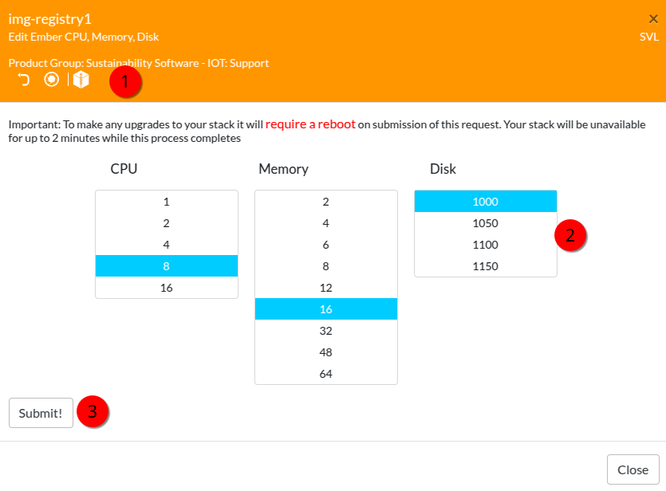

prepare VM
Deploy VM
deploy a Redhat 8 image on Fyre.
when deployed, extend disk via EDIT EMBER menu in fyre.ibm.com/stacks
set the new size of the disk and submit.
repeat until you have the size you need.

Extend disk
open a shell session as root.
List block devices:
lsblk
NAME MAJ:MIN RM SIZE RO TYPE MOUNTPOINT
sr0 11:0 1 1024M 0 rom
vda 252:0 0 1.2T 0 disk
vda above reflects newly added space,1.2 TB in this case.
Create a new partition using fdisk, the use the interactive options:
fdisk /dev/vda
Command (m for help): p
Disk /dev/vda: 1.2 TiB, 1288490188800 bytes, 2516582400 sectors
…
…
Feedback
Command (m for help): new
<all defaults>
Created a new partition 3 of type ‘Linux’ and of size 950 GiB.
Command (m for help): t
Partition number (1-3, default 3):Hex code (type L to list all codes): 8e
Changed type of partition ‘Linux’ to ‘Linux LVM’.
Command (m for help): w
The partition table has been altered.
Syncing disks, you can verify with:
fdisk -l /dev/vda
sync;reboot
lsblk
list the physical volumes
pvdisplay
create a new physical volume
pvcreate /dev/vda3
list the volume groups
vgdisplay
extend the volme group
vgextend rhel /dev/vda3
list the logical volumes
lvdisplay
extend the logical volume
lvextend -l+100%FREE /dev/rhel/root
expand the XFS filesystem
xfs_growfs /
verify the file system space usage
df -h